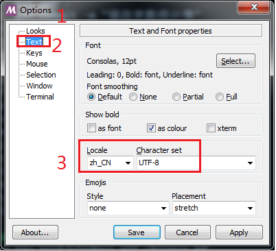
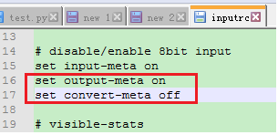
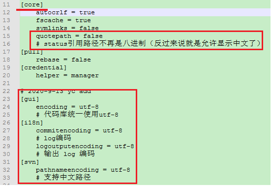

解决Windows下git bash中文乱码
Git Bash配置
当前目录右击打开Git Bash，右击窗口进入options
分别将Text选项的Locale改为zh-CN，character-set改为UTF-8，如下图所示：

etc\inputrc文件修改
查找以下2行，并修改为如图所示，使得在 Git Bash 中可以正常输入中文
set output-meta on
set convert-meta off

etc\profile文件修改
在最后增加以下2行内容
export LESSHARESET=utf-8
alias ls='ls -F --color=auto --show-control-chars'
注：
1.git log 输出时默认用 less 作分页工具，这里设置 less 的字符编码，使得 $ git log 可以正常显示中文
2.使用 ls –show-control-chars 命令来强制使用控制台字符编码显示文件名，即可查看中文文件名
etc\gitconfig文件修改

或者在Bash提示符下输入：
git config --global core.quotepath false
git config --global gui.encoding utf-8
git config --global i18n.commit.encoding utf-8
git config --global i18n.logoutputencoding utf-8
git config --global svn.pathnameencoding utf-8
注：通过上述设置，UTF-8 编码的文本文件可以正常查看，但是 GBK 编码的文件将会乱码，所以还是没有从根本上解决问题。
可行的方法之一为：将所有文本文件的编码统一为 UTF-8 或 GBK，然后设置相应的gui.encoding 参数为 utf-8 或 gbk